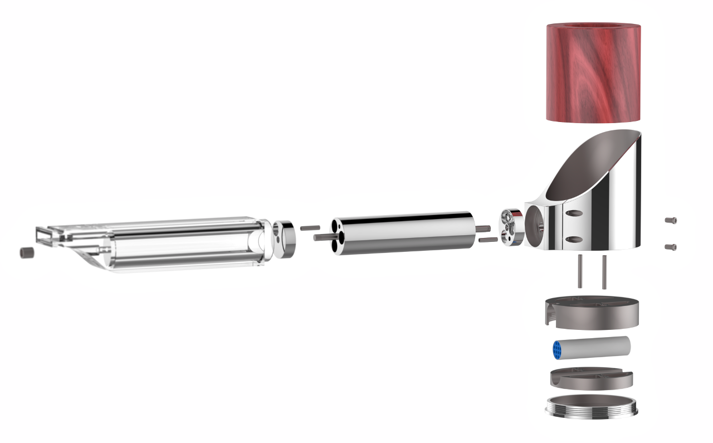
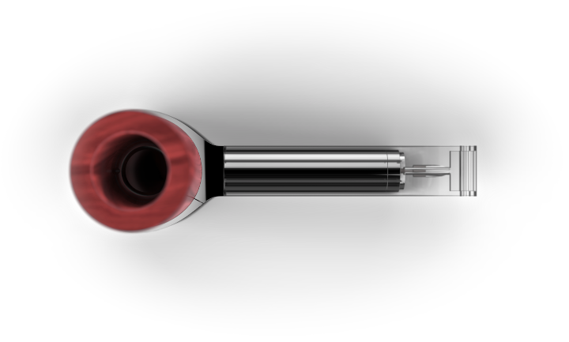
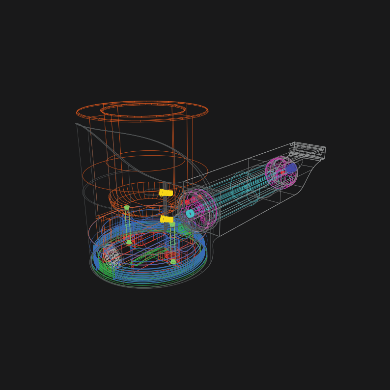

Best from both worlds: ancient traditions meet state of the art technology.
Not only its functionality, but the materials and the manufacturing processes are mixtures of high-tech and tradition. Wirecut EDM magnesium and aluminium, turned briar-root and molded polycarbonate.

3D CAD model’s wireframe view: precision even in the smallest details.
© 2008 – 2017 peter varo